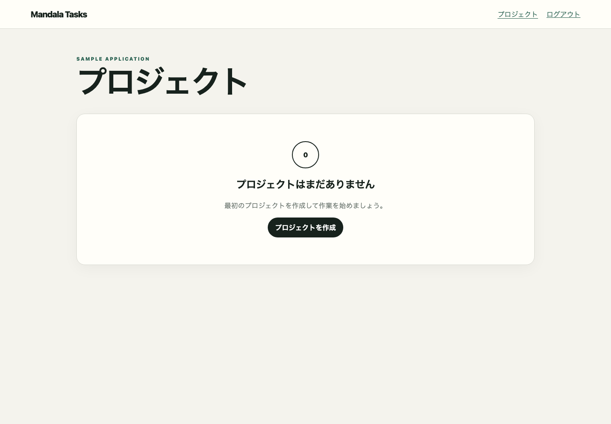
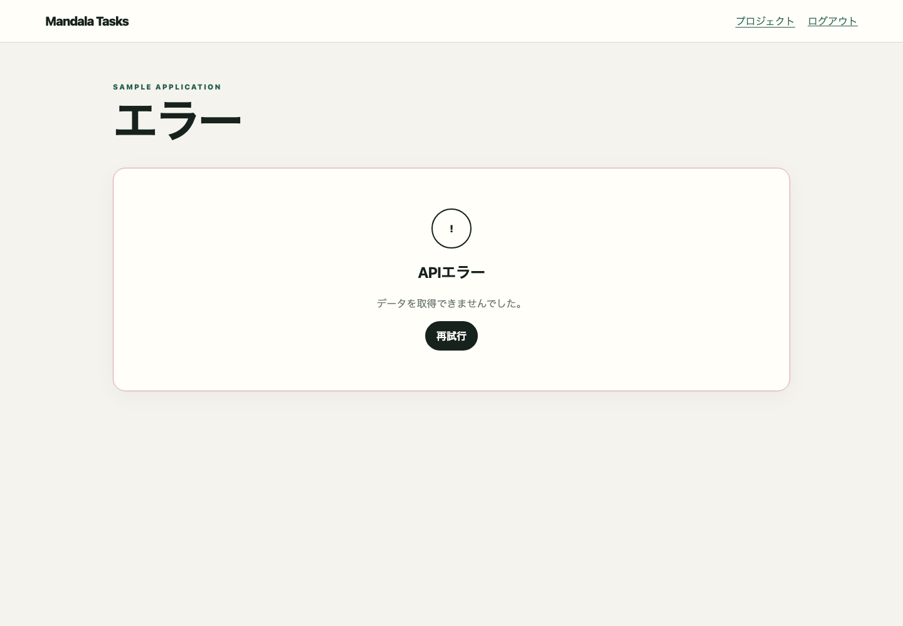

screen:/loginOBSERVEDログイン成功
終了/projectsscreen:/projectsscreen:/projectsFrontend route /projects




この画面を開始または終了とする、E2Eで観測済みの1対1の画面遷移です。
各操作の開始状態、終了状態、順序、role、feature flag、結果、関連HTTPを表示します。
/projects{}
mandala/snapshots/ui/api-error.json